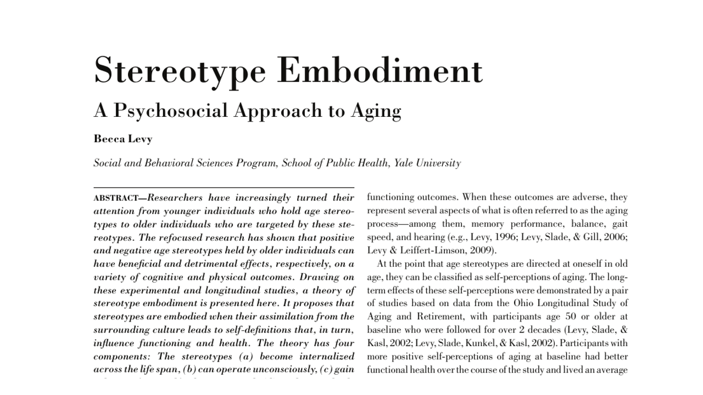
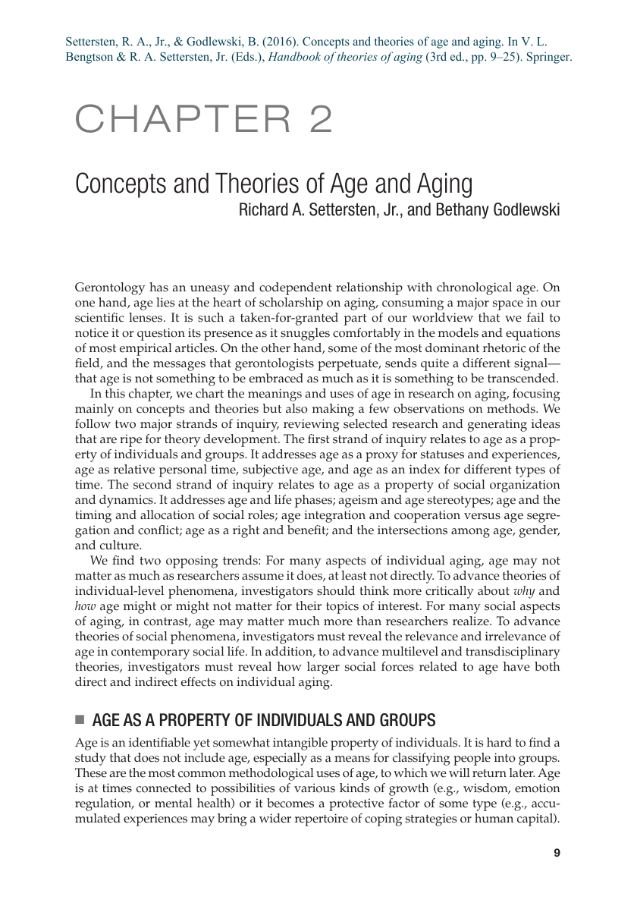

읽기 일정
주차별 읽기
22개
이번 주2주차 · 9/142주차 · 연령의 사회적 정의와 연령차별 · 주관적 노화
Stereotype Embodiment: A Psychosocial Approach to Aging
연령 고정관념이 생애에 걸쳐 내면화되어 노년기 건강과 기능에 영향을 미치는 경로를 설명하는 이론 논문.

공개됨2주차 · 9/142주차 · 연령의 사회적 정의와 연령차별 · 주관적 노화
Concepts and Theories of Age and Aging
연대기적 연령을 넘어 생물학적·심리적·사회적 연령과 노화 이론의 역할을 정리하는 핸드북 장.